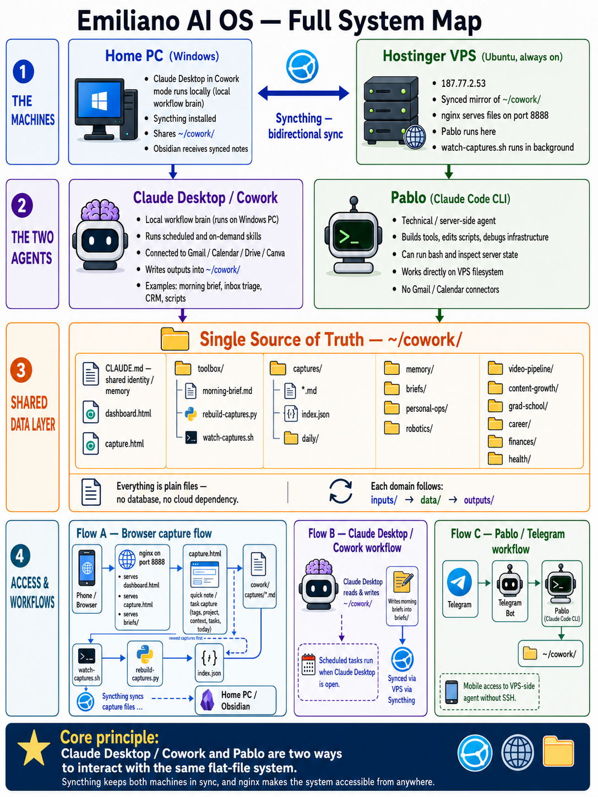
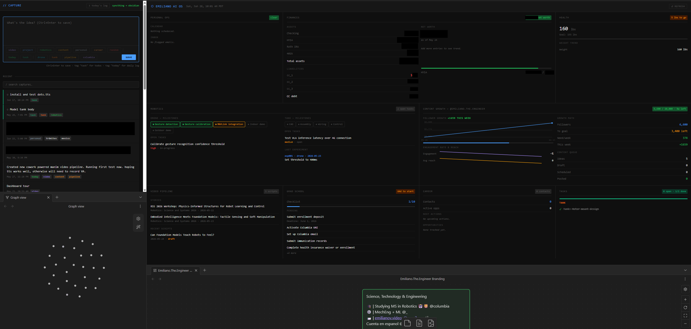

Two Machines › Two Agents › One Synced Filesystem
I built a personal AI operating system that spans two machines, my home PC and a Hostinger VPS, kept in sync through Syncthing, with two AI agents working in that shared filesystem. Everything lives as a plain file. No database, no cloud storage dependency.
A browser or phone hits nginx on the VPS, which either reads the dashboard's data files or writes a new capture through a local API. A background watcher rebuilds the capture index on every change, and Syncthing mirrors the whole folder back to my Windows machine, where Claude Desktop and Obsidian pick up whatever changed. Telegram routes mobile messages to Pablo, the agent running directly on the VPS.

Home PC (Windows)
Claude Desktop runs here in Cowork mode, which is where the Cowork agent lives and operates. Syncthing also runs here, sharing ~/cowork/ bidirectionally with the VPS.
Hostinger VPS
An always-on Ubuntu box at a static IP. ~/cowork/ here is the synced mirror of the Windows folder. nginx serves it statically on port 8888, Pablo (Claude Code CLI) operates directly on this filesystem, and a background watcher rebuilds the capture index on every change.
Cowork (Claude Desktop, Windows)
The brain for scheduled and on-demand workflows. It executes skills from toolbox/, a morning brief, inbox triage, script generation, CRM updates, and more, and it's the only side with live connectors: Gmail, Calendar, Drive, Canva. Scheduled tasks (a morning brief at 7am, a weekly review on Mondays) fire whenever Claude Desktop is open, and every output it writes gets pushed to the VPS by Syncthing.
Pablo (Claude Code CLI, VPS)
Operates directly on the VPS copy of the filesystem: running bash commands, editing scripts, debugging the infrastructure itself. It has no Gmail or Calendar access, those connectors live on the Cowork side only, but it's reachable from my phone through a Telegram bot that routes messages straight to it.
~/cowork/ is the single source of truth. Every domain (robotics, video pipeline, content growth, grad school, career, finances, health) follows the same three-folder pattern: inputs/ that I maintain by hand and the agents never touch, data/ that gets refreshed automatically, and outputs/ for dated artifacts.
~/cowork/
├── CLAUDE.md root identity/memory, read every session
├── capture.html quick capture UI, served by nginx
├── dashboard.html always-on status dashboard
├── toolbox/ skill definitions Pablo and Cowork execute
│ ├── morning-brief.md one of 15 skill prompts
│ ├── rebuild-captures.py
│ └── watch-captures.sh
├── Cowork/
│ ├── captures/ one .md file per note, plus index.json
│ └── daily/ daily log files
├── memory/ persistent context across sessions
├── briefs/ daily morning briefs
└── {domain}/ robotics, career, finances, health...
├── inputs/ human-maintained, never machine-written
├── data/ machine-refreshed JSON
└── outputs/ dated artifacts

I open capture.html on whatever device is in my hand, type a note, tag it (context tags like video or robotics, a today or task flag, project tags like drone or tank), and save. That posts to a local API, which writes a Markdown file with YAML frontmatter into Cowork/captures/. A background watcher notices the new file and rebuilds index.json, which is what the page's recent list and task checkboxes actually read from.
Tasks float to the top and stay checked through localStorage. A "today's log" button compiles everything tagged today into a downloadable Markdown summary. Syncthing carries every capture over to Obsidian on my home PC, so the same note shows up there without me doing anything.
Syncthing is the only thing keeping the two machines honest. Pablo writes a file on the VPS and it appears on my Windows machine within seconds; I write a capture from my phone and it lands in Obsidian the same way, no manual export, no cloud drive in between. nginx just serves the result: the dashboard, the capture page, the daily briefs, all statically off ~/cowork/ on port 8888.
The Telegram bot is how I reach Pablo without opening a terminal. A message from my phone routes to the bot, the bot hands it to Pablo, Pablo reads or writes against ~/cowork/, and the reply comes back the same way.